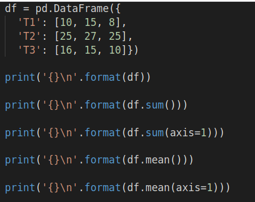
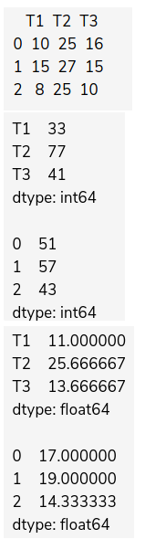
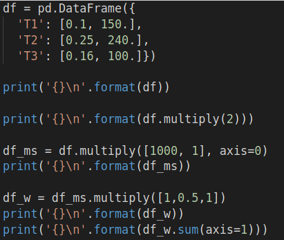
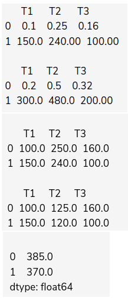

Features
Chapter Goals:
• Understand the difference between quantitative and categorical features
• Learn methods to manipulate features and add them to a DataFrame
• Write code to add MLB statistics to a DataFrame
Quantitative vs. categorical
We often refer to the columns of a DataFrame as the
features of the dataset that it represents. These features can be quantitative or categorical.
A quantitative feature, e.g. height or weight, is a feature that can be measured numerically. These are features we could calculate the sum, mean, or other numerical metrics for.
A categorical feature, e.g. gender or birthplace, is one where the values are categories that could be used to group the dataset. These are the features we would use with the
groupby function from the previous chapter.
Some features can be both quantitative or categorical, depending on the context they are used. For example, we could use year of birth as a quantitative feature if we were trying to find statistics such as the average birth year for a particular dataset. On the other hand, we could also use it as a categorical feature and group the data by the different years of birth.
~~~~~~~~~~~~~~~~~~~~~~~~~~~~~~~~~
Quantitative features
In the previous chapter, we focused on grouping a dataset by its categorical features. We'll now describe methods for dealing with quantitative features.
Two of the most important functions to use with quantitative features are
sum and
mean. In the previous chapter we also introduced
sum and
mean functions, which were used to aggregate quantitative features for each a group.
However, while the functions from the previous chapter were applied to the output of
groupby, the ones we use in this chapter are applied to individual DataFrames.
The code below shows example usages of
sum and
mean. The
df DataFrame represents three different speed tests (columns) for three different processors (rows). The data values correspond to the seconds taken for a given speed test and processor.
 
Neither function takes in a required argument. The most commonly used keyword argument for both functions is
axis. The
axis argument specifies whether to aggregate over rows (
axis=0, the default), or columns (
axis=1).
In the code example, we used a DataFrame representing speed tests for three different processors (measured in seconds). When we used no argument, equivalent to using
axis=0, the
sum and
mean functions calculated total and average times for each test. When we used
axis=1, the
sum and
mean functions calculated total and average test times (across all three tests) for each processor.
C. Weighted features
Along with aggregating quantitative features, we can also apply weights to them. We do this through the
multiply function.
The
multiply function takes in a list of weights or a constant as its required argument. If a constant is used, the constant is multiplied across all the rows or columns (depending on the value of
axis). If a list is used, then the position of each weight in the list corresponds to which row/column it is multiplied to.
In contrast with
sum and
mean, the default
axis for
multiply is the columns axis. Therefore, to multiply weights along the rows of a DataFrame, we need to explicitly set
axis=0.
The code below shows example usages of
multiply. The
df DataFrame represents three different speed tests (columns) for two different processors (rows).
 
In the code above, the test times for processor
'p1' were measured in seconds, while the times for
'p2' were in milliseconds. So we made all the times in milliseconds by multiplying the values of
'p1' by
1000.
Then we multiplied the values in
'T2' by
0.5, since those tests were done with two processors rather than one. This makes the final
sum a
weighted sum across the three columns.